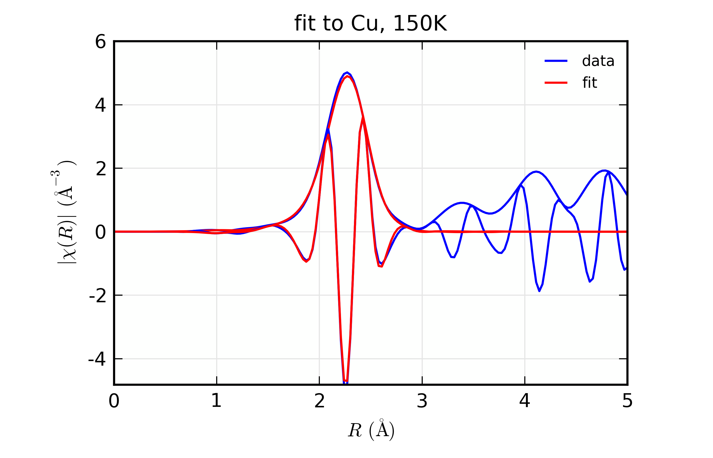
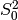
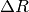

| Larch: X-ray Data Analysis |
Fitting XAFS data with structural models based on Feff calculations is a primary motivation for Larch. In this section, we describe how to set up a fitting model to fit a set of FEFF calculations to XAFS data. Many parts of the documentation so far have touched on important aspects of this process, and those sections will be referenced here.
The basic approach is to create a model EXAFS  as a sum of
scattering paths that will be compared to experimentally derived
. The model will be parameterized in terms of Larch
Parameters defined by _math.param(). A fit, using the same fitting
infrastructure as to _math.minimize() will be used to refine the
values of the variable parameters in the model. To be clear, the Path
Parameters for all Feff Paths in the fits should be written in terms of
variable parameters help in a single parameter group. The refinement will
be done by comparing the model and experimental after a
Transformation based on the Fourier transforms in XAFS: Fourier Transforms for XAFS.
as a sum of
scattering paths that will be compared to experimentally derived
. The model will be parameterized in terms of Larch
Parameters defined by _math.param(). A fit, using the same fitting
infrastructure as to _math.minimize() will be used to refine the
values of the variable parameters in the model. To be clear, the Path
Parameters for all Feff Paths in the fits should be written in terms of
variable parameters help in a single parameter group. The refinement will
be done by comparing the model and experimental after a
Transformation based on the Fourier transforms in XAFS: Fourier Transforms for XAFS.
The function feffit() is the principle function to do the fit of a
set of Feff paths to XAFS spectra. This essentially runs
_math.minimize() with a parameter group, but with a built-in
objective function to calculate the fit residual. This built-in objective
function calculates the residual as the difference of model and
experimental for a list of Datasets. Here, a Feffit
Dataset is an important concept that will allow us to easily extend
modeling to multiple data sets.
A Feffit Dataset has three principle components. First, it has an
experimental data, . Second, it has a list of Feff paths –
ff2chi() will be used to calculate the model . Third,
it has a Feffit Transform group which holds the Fourier transform and
fitting ranges to select how the data and model are to be compared. In
addition, a fit has a single parameter group, holding all the variable and
constrained parameters used by all the paths and data sets in a fit.
There are then 3 principle functions for setting up and executing feffit():
- feffit_transform() is used to create a Transform group, which holds the set of Fourier transform parameters.
- feffit_dataset() is used to create a Dataset group, which consists of the three components described above:
- a group holding experimental data (k and chi).
- a list of Feff paths.
- a Transform group.
- Finally, feffit() is run with a parameter group containing the variable and constrained Parameters for the fit, and a dataset or list of datasets groups.
create and return Feffit Transform group to be used in a Feffit dataset.
| Parameters: |
|
|---|---|
| Returns: | a Feffit Transform group |
The parameters stored in the returned group object will be used to control how the fit is performed. That is, the Transform group determines the Fourier transform parameters and fit space for a fit. All the arguments passed in will be stored as variables of the same name in the Feffit Transform group. Additional variables may be stored in this group as well, once the group has been used to do some transforms.
create a Feffit Dataset group.
param data: group containing experimental EXAFS (needs arrays k and chi). param pathlist: list of FeffPath groups, as created from feffpath(). param transform: Feffit Transform group. returns: a Feffit Dataset group. A Dataset group is pretty simple, initially consisting of sub-groups data, pathlist, and transform, though each of these can be complex.
The value for data must be a group containing arrays k and chi (as determined _xafs.autobk() or some other procedure). If it contains a value (scalar or array) epsilon_k, that will be used as the uncertainty in
The pathlist is a list of Feff Paths, each of which can have its Path Parameters written in terms of fit parameters (see the final example in the previous section). This list of paths will be sent to ff2chi() to calculate the model
to compare to the experimental data. Finally, transform is a Feffit transform group, as defined above.
A Dataset will also have a few other components, including:
component name description epsilon_k estimated noise in the epsilon_r estimated noise in the data.
n_idp estimated number of independent points in the data. model a group for the model
The model component will be set after a fit, and will contain the
standard set of arrays for and for the
fitting model, and can be directly compared to the arrays for the
experimental data.
execute a Feffit fit.
| Parameters: |
|
|---|---|
| Returns: | a fit results group. |
The paramgroup is a group containing all fitting parameters for the model. The datasets argument can be either a single Feffit Dataset as created by feffit_dataset() or a list of them. If path_outputs==True, all Feff Paths in the fit will be separately Fourier transformed.
When the fit is completed, the returned value will be a group containing three objects:
- datasets: an array of FeffitDataSet groups used in the fit.
- params: This will be identical to the input parameter group.
- fit: an object which points to the low-level fit.
In addition, the output statistics listed below in Table of Feffit Output Statistics. will be written the paramgroup group. Since each varied and constrained parameter will also have best-values and estimated uncertainties, this allows the parameter group to be considered the principle group for a particular fit – it holds the variable parameters and statistical results needed to compare two fits.
On output, a new sub-group called model will be created for each Feffit Dataset. This will parallel the data group, in the sense that it will have output arrays listed in the Table of Feffit Output Arrays.
If path_outputs==True, all Feff Paths in the fit will be separately Fourier transformed., with the result being put in the corresponding FeffPath group.
A final note on the outputs of feffit(): the param sub-group in the output is truly identical to the input paramgroup. It is not a copy but points to the same group of values (see Object identities, copying, and equality vs. identity).
Table of Feffit Output Statistics. These values will be written to the paramgroup group. Listed here are the group component name and a description of its content. Many of these are described in more detail in Fit Results and Outputs
component name description chi_reduced reduced chi-square statistic. chi_square chi-square statistic. covar covariance matrix. covar_vars list of variable names for rows and columns of covariance matrix. errorbars Flag whether error bars could be calculated. fit_details group with additional fit details. message output message from fit. nfree number of degrees of freedom in fit. nvarys number of variables in fit.
Table of Feffit Output Arrays. The following arrays will be written into the data and model sub-group for each dataset. The arrays will be created using the Path Parameters used in the most recent fit and the Feffit Transform group. Many of these arrays have names following the conventions for xftf() in section on Fourier Transforms for XAFS.
array name description k wavenumber array of .
chi kwin window (length of input chi(k)).
r uniform array of , out to rmax_out.
chir complex array of .
chir_mag magnitude of chir_pha phase of chir_re real part of chir_im imaginary part of
We start with a fairly minimal example, fitting spectra read from a data file with a single Feff Path.
## examples/feffit/doc_feffit1.lar
# read data
cu_data = read_ascii('cu.chi', labels='k, chi')
# define fitting parameter group
pars = group(amp = param(1, vary=True),
del_e0 = guess(0.1),
sig2 = param(0.002, vary=True),
del_r = guess(0.) )
# define a Feff Path, give expressions for Path Parameters
path1 = feffpath('feffcu01.dat',
s02 = 'amp',
e0 = 'del_e0',
sigma2 = 'sig2',
deltar = 'del_r')
# set tranform / fit ranges
trans = feffit_transform(kmin=3, kmax=17, kw=2, dk=4, window='kaiser', rmin=1.4, rmax=3.0)
# define dataset to include data, pathlist, transform
dset = feffit_dataset(data=cu_data, pathlist=[path1], transform=trans)
# perform fit!
out = feffit(pars, dset)
print feffit_report(out)
fout = open('doc_feffit1.out', 'w')
fout.write(feffit_report(out))
fout.close()
plot(dset.data.k, dset.data.chi *dset.data.k**2, new=True,
xlabel=r'$k \rm\,(\AA^{-1})$', label='data',
ylabel=r'$k^2\chi(k) \rm\,(\AA^{-2})$',
title='First shell fit to Cu', show_legend=True)
plot(dset.model.k, dset.model.chi*dset.model.k**2, label='fit')
plot(dset.data.r, dset.data.chir_mag, new=True, xmax=8, win=2,
xlabel=r'$R \rm\,(\AA)$', label='data',
ylabel=r'$|\chi(R)| \rm\,(\AA^{-3})$',
title='First shell fit to Cu', show_legend=True)
plot(dset.model.r, dset.model.chir_mag, label='fit', win=2)
## end examples/feffit/doc_feffit1.lar
This simply follows the essential steps:
1. A group of parameters pars is defined. Note that you can include upper and/or lower bounds and mix the use of _math.guess() and _math.param().
2. A Feff Path is defined with feffpath(), as discussed in the previous section. Here we assign each of the Path Parameters to the name of one of the fitting parameters. More complex expressions and relations can be used, but for this example, we’re keeping it simple.
3. A Feffit Transform is created with feffit_transform(), which essentially sets the Fourier transform parameters and fit ranges.
4. A Feffit Dataset is created with feffit_dataset(). To begin the fit, this includes a data group, a transform group, and a pathlist, which is a list of FeffPaths.
5. The fit is run with feffit(), and the output group is saved. This output group is used by feffit_report() to generate a fit report (shown below).
6. Plots are made from the dataset, using rather long-winded plot() commands.
running this example prints out the following report:
=================== FEFFIT RESULTS ====================
[[Statistics]]
npts, nvarys, nfree= 104, 4, 100
chi_square = 6853.2901
reduced chi_square = 68.532901
r-factor = 0.0028522676
[[Data]]
fit space = 'r'
r-range = 1.400, 3.000
k-range = 3.000, 17.000
k window, dk = 'kaiser', 4.000
paths used in fit = ['feffcu01.dat']
k-weight = 2
epsilon_k = 0.000150
epsilon_r = 0.007111
n_independent = 14.260
[[Variables]]
amp = 0.930915 +/- 0.042009 (init= 1.000000)
del_e0 = 3.860819 +/- 0.550083 (init= 0.100000)
del_r = -0.005996 +/- 0.002807 (init= 0.000000)
sig2 = 0.008670 +/- 0.000330 (init= 0.002000)
[[Correlations]] (unreported correlations are < 0.100)
amp, sig2 = 0.929
del_e0, del_r = 0.920
del_r, sig2 = 0.159
amp, del_r = 0.137
[[Paths]]
feff.dat file = feffcu01.dat
Atom x y z ipot
Cu 0.0000, 0.0000, 0.0000 0 (absorber)
Cu 0.0000, -1.8016, 1.8016 1
reff = 2.54780
Degen = 12.00000
S02 = 0.93091 +/- 0.04201
E0 = 3.86082 +/- 0.55008
R = 2.54180 +/- 0.00281
deltar = -0.00600 +/- 0.00281
sigma2 = 0.00867 +/- 0.00033
=======================================================
and generates the plots shown below


Figure 12. Results for Feffit for a simple 1-shell fit to a spectrum from Cu metal.
This is a pretty good fit to the first shell of Cu metal, and shows the basic mechanics of fitting XAFS data to Feff Paths. There are several things that might be added to this for modeling more complex XAFS data, including adding more paths to a fit, including multiple-scattering paths, simultaneously modeling more than one data set, and building more complex fitting models. We’ll get to these in the following examples.
But first, a small detour. The plotting commands in the above example for
plotting and for data and model will be
useful for the other examples as well, so we’ll create a slightly
generalized function to make such plots and put this and several other
plotting functions into a separate file, doc_macros.lar. This will look
like this:
## examples/feffit/doc_macros.lar
## general purpose macros, mostly for showing XAFS data
##
label_k = r'$k \rm\,(\AA^{-1})$'
label_r = r'$R \rm\,(\AA)$'
label_chikw = r'$k^2\chi(k) \rm\,(\AA^{-%i})$'
label_chir = r'$|\chi(R)| \rm\,(\AA^{-%i})$'
label_chirre = r'${\rm Re}[\chi(R)] \rm\,(\AA^{-%i})$'
label_chirim = r'${\rm Im}[\chi(R)] \rm\,(\AA^{-%i})$'
label_chirpha = r'${\rm Phase}[\chi(R)] \rm\,(\AA^{-%i})$'
def plot_chifit(dataset, kweight=2, rmax=8, title='Data and Best-Fit',
win=1, show_legend=True):
"""show chi(k) and chi(r) data and best-fit for a dataset"""
# make k-weighted chi(k)
kw = int(kweight)
data_chi_kw = dataset.data.chi * dataset.data.k**kw
model_chi_kw = dataset.model.chi * dataset.model.k**kw
# show k-weighted chi(k) in first plot window
newplot(dataset.data.k, data_chi_kw, title=title,
xlabel=label_k, ylabel=label_chikw % kw,
show_legend=show_legend, color='blue', label='data', win=win)
plot(dataset.model.k, model_chi_kw, color='red', label='fit', win=win)
# show chi(R) in second plot window
newplot(dataset.data.r, dataset.data.chir_mag, xmax=rmax, title=title,
xlabel=label_r, ylabel=label_chir % (kw+1),
show_legend=show_legend, color='blue', label='data', win=win+1)
plot(dataset.model.r, dataset.model.chir_mag, color='red', label='fit', win=win+1)
plot(dataset.model.r, dataset.data.chir_re, color='blue', label='', win=win+1)
plot(dataset.model.r, dataset.model.chir_re, color='red', label='', win=win+1)
enddef
def plot_path_k(dataset, ipath, kweight=None, offset=0, label=None, **extra):
"plot k-weighted chi(k) for a particular path in a dataset"
path = dataset.pathlist[ipath]
if label is None:
label = 'path %i' % (ipath)
endif
if kweight is None:
kweight = dataset.transform.kweight
endif
kw = int(kweight)
chi_kw = offset + path.chi * path.k**kw
plot(path.k, chi_kw, label=label,
xlabel=label_k, ylabel=label_chikw % kw, **extra)
enddef
def plot_path_r(dataset, ipath, comp='mag', offset=0, label=None, **extra):
"plot chi(r) for a particular path in a dataset"
path = dataset.pathlist[ipath]
if label is None:
label = 'path %i' % (ipath)
endif
kw = int(dataset.transform.kweight)
if comp == 're':
chir= path.chir_re
ylabel = label_chirre % kw
elif comp == 'im':
chir= path.chir_im
ylabel = label_chirim % kw
elif comp == 'phase':
chir= path.chir_pha
ylabel = label_chirpha % kw
else:
chir = path.chir_mag
ylabel = label_chir % kw
endif
chir = offset + chir
plot(path.r, chir, label=label, xlabel=label_r, ylabel=ylabel, **extra)
enddef
def plot_modelpaths_k(dataset, kweight=None, offset=-1, title='Model and Paths', **extra):
"""show chi(k) for sum and individual paths"""
# make k-weighted chi(k)
if kweight is None:
kweight = dataset.transform.kweight
endif
kw = int(kweight)
model = dataset.model
model_chi_kw = model.chi * model.k**kw
newplot(model.k, model_chi_kw, title=title,
xlabel=label_r, ylabel=label_chikw % kw,
color='blue', label='sum', win=1, **extra)
for ipath in range(len(dataset.pathlist)):
plot_path_k(dataset, ipath, kweight=kw, offset=(ipath+1)*offset)
endfor
enddef
def plot_modelpaths_r(dataset, comp='mag', offset=-0.5, title='Model and Paths', **extra):
"""show chi(r) for sum and individual paths"""
# make k-weighted chi(k)
kw = int(dataset.transform.kweight)
model = dataset.model
if comp == 're':
chir= model.chir_re
ylabel = label_chirre % kw
elif comp == 'im':
chir= model.chir_im
ylabel = label_chirim % kw
elif comp == 'phase':
chir= model.chir_pha
ylabel = label_chirpha % kw
else:
chir = model.chir_mag
ylabel = label_chir % kw
endif
newplot(model.r, chir, label='sum', xlabel=label_r, ylabel=ylabel, title=title, **extra)
for ipath in range(len(dataset.pathlist)):
plot_path_r(dataset, ipath, comp=comp, offset=(ipath+1)*offset)
endfor
enddef
def write_report(filename, out):
"write report to file"
f = open(filename, 'w')
f.write(out)
f.close()
enddef
## end of examples/feffit/doc_macros.lar
This defines several new plotting functions plot_chifit(), plot_path_k(), and plot_path_r(), and so on which we’ll find useful in later examples. Using the first of these, we can then replace the plot commands in the script above with:
run('doc_macros.lar')
plot_chifit(dset, title='First shell fit to Cu')
and get reproducible plots without having to copy and paste the same code fragment everywhere. We’ll use this in the examples below.
We’ll continue with the Cu data set, and add more paths to model further shells. This is fairly straightforward, but in the interest of space, we’ll limit the example here to 3 paths to model the first two shells of copper. This is a small step, but highlights a main concern with XAFS analysis that we need to address. This is the fact that there simply is not enough freedom in the XAFS signal to measure all the possible adjustable Path Parameters independently. Thus we need to be able to apply constraints to the Path Parameters.
Here, we use two of the most common types of constraints. First, we apply
the same amplitude reduction factor and the same  shift to all
Paths. These may seem obvious for this example, but for more complicated
examples, either including shells of mixed species or Feff Paths generated
from different calculation, these become less obvious.
shift to all
Paths. These may seem obvious for this example, but for more complicated
examples, either including shells of mixed species or Feff Paths generated
from different calculation, these become less obvious.
Second, we introduce a scale the change in distance by a single expansion
factor  (alpha in the script), and using the built-in
value of half-path distance, reff, and setting deltar =
'alpha*reff' for all Paths. During the calculation of
for each path that happens in the fitting process, the value of reff
will be updated to the correct value for each path. Thus, as the value of
alpha varies in the fit, each path will use its proper value for
reff, so that each deltar will be different but not independent.
This ensures that all the path lengths change in a manner consistent with
one another.
(alpha in the script), and using the built-in
value of half-path distance, reff, and setting deltar =
'alpha*reff' for all Paths. During the calculation of
for each path that happens in the fitting process, the value of reff
will be updated to the correct value for each path. Thus, as the value of
alpha varies in the fit, each path will use its proper value for
reff, so that each deltar will be different but not independent.
This ensures that all the path lengths change in a manner consistent with
one another.
## examples/feffit/doc_feffit2.lar
# read data
cu_data = read_ascii('cu.chi', labels='k, chi')
# define fitting parameter group
pars = group(amp = param(1, vary=True),
del_e0 = guess(0.1),
sig2_1 = param(.002, vary=True),
sig2_2 = param(.002, vary=True),
sig2_3 = param(.002, vary=True),
alpha = guess(0) )
# define 3 Feff Path, give expressions for Path Parameters
path1 = feffpath('feff0001.dat', s02 = 'amp', e0 = 'del_e0',
sigma2 = 'sig2_1', deltar = 'alpha*reff')
path2 = feffpath('feff0002.dat', s02 = 'amp', e0 = 'del_e0',
sigma2 = 'sig2_2', deltar = 'alpha*reff')
path3 = feffpath('feff0003.dat', s02 = 'amp', e0 = 'del_e0',
sigma2 = 'sig2_3', deltar = 'alpha*reff')
trans = feffit_transform(kmin=3, kmax=17, kw=2, dk=4, window='kaiser', rmin=1.4, rmax=3.4)
# define dataset to include data, pathlist, transform
dset = feffit_dataset(data=cu_data, pathlist=[path1, path2, path3], transform=trans)
# perform fit!
out = feffit(pars, dset)
report = feffit_report(out)
print report
run('doc_macros.lar')
write_report('doc_feffit2.out', report)
plot_chifit(dset, title='Three-shell fit to Cu', rmax=5)
# ## end examples/feffit/doc_feffit2.lar
Here we simply create path2 and path3 using nearly the same parameters
as for path1. Compared to the previous example, the other changes
are that the range for the fit has been increased so that the
fit will try to fit the second shell, and that sigma2 is allowed to
vary independently for each path.
The output for this fit is a bit longer, being:
=================== FEFFIT RESULTS ====================
[[Statistics]]
npts, nvarys, nfree= 130, 6, 124
chi_square = 5826.6649
reduced chi_square = 46.989233
r-factor = 0.0023935584
[[Data]]
fit space = 'r'
r-range = 1.400, 3.400
k-range = 3.000, 17.000
k window, dk = 'kaiser', 4.000
paths used in fit = ['feff0001.dat', 'feff0002.dat', 'feff0003.dat']
k-weight = 2
epsilon_k = 0.000150
epsilon_r = 0.007111
n_independent = 17.825
[[Variables]]
alpha = -0.002470 +/- 0.000950 (init= 0.000000)
amp = 0.928995 +/- 0.036148 (init= 1.000000)
del_e0 = 3.821552 +/- 0.472780 (init= 0.100000)
sig2_1 = 0.008643 +/- 0.000285 (init= 0.002000)
sig2_2 = 0.014079 +/- 0.001441 (init= 0.002000)
sig2_3 = 0.008410 +/- 0.003766 (init= 0.002000)
[[Correlations]] (unreported correlations are < 0.100)
amp, sig2_1 = 0.930
alpha, del_e0 = 0.922
amp, sig2_3 = 0.239
sig2_1, sig2_3 = 0.237
amp, sig2_2 = 0.222
sig2_1, sig2_2 = 0.208
alpha, sig2_1 = 0.179
alpha, amp = 0.159
del_e0, sig2_3 = 0.155
del_e0, sig2_2 = -0.140
alpha, sig2_3 = 0.138
[[Paths]]
feff.dat file = feff0001.dat
Atom x y z ipot
Cu 0.0000, 0.0000, 0.0000 0 (absorber)
Cu 0.0000, -1.8016, 1.8016 1
reff = 2.54780
Degen = 12.00000
S02 = 0.92899 +/- 0.03615
E0 = 3.82155 +/- 0.47278
R = 2.54151 +/- 0.00242
deltar = -0.00629 +/- 0.00242
sigma2 = 0.00864 +/- 0.00028
feff.dat file = feff0002.dat
Atom x y z ipot
Cu 0.0000, 0.0000, 0.0000 0 (absorber)
Cu -3.6032, 0.0000, 0.0000 1
reff = 3.60320
Degen = 6.00000
S02 = 0.92899 +/- 0.03615
E0 = 3.82155 +/- 0.47278
R = 3.59430 +/- 0.00342
deltar = -0.00890 +/- 0.00342
sigma2 = 0.01408 +/- 0.00144
feff.dat file = feff0003.dat
Atom x y z ipot
Cu 0.0000, 0.0000, 0.0000 0 (absorber)
Cu 1.8016, -1.8016, 0.0000 1
Cu 1.8016, 0.0000, -1.8016 1
reff = 3.82180
Degen = 48.00000
S02 = 0.92899 +/- 0.03615
E0 = 3.82155 +/- 0.47278
R = 3.81236 +/- 0.00363
deltar = -0.00944 +/- 0.00363
sigma2 = 0.00841 +/- 0.00377
=======================================================
With plots of data and fits as shown below.


Figure 13. Results for Feffit for a 3-shell fit to a spectrum from Cu metal, constraining all path distances to expand with a single variable.
Here, we show both the magnitude and real part of . The fit
to the real part shows excellent agreement over the fit range of
[1.4, 3.4]  . It is often useful the contributions from the
individual paths. With the macros defined above, this is pretty
straightforward, as we can just do:
. It is often useful the contributions from the
individual paths. With the macros defined above, this is pretty
straightforward, as we can just do:
plot_modelpaths_k(dset, offset=-1)
plot_modelpaths_r(dset, comp='re', offset=-1, xmax=6)
to generate the following plots of the contributions of the different paths:


Figure 14. Path contributions to full mode for the 3-shell fit to Cu spectrum.
We’ll extend the above example by adding two more data sets. Since the three data sets have some things in common, we’ll be able to use some a smaller number of total variable parameters for all data sets than if we had fit each of them individually. This further allows us to reduce the number of freely varying parameters in a model of XAFS data, and to better measure the parameters that are varied.
Here, we’ll use data on Cu metal measured at three different temperatures. Since there is no phase change in the material over this temperature range, the structure changes in small and predictable ways that lends itself to simple parameterization. In the interest of brevity, we’ll only use one path, but the example could easily be extended to include more paths.
In this example, we have three distinct datasets, so we’ll have three lists
of paths. Each of these will have a single path. Since we’re modeling
nearly the same structure, the three paths will use the same Feff.dat file
and have many parameters in common, but some parameters will be different
for each data set. As with the previous example, we use the same amplitude
reduction factor shift to all data sets. We allow distances to
vary, but constrain them so that the change is linear in the sample
temperature, as if there were a simple linear expansion in . To
do this, we set deltar = 'dr_off + T*alpha*reff', where T is the
temperature for the dataset. For  we’ll use one of the
built-in models described in Models for Calculating sigma2. Here we’ll use sigma2_eins(), but
sigma2_debye() can be used as well, and does a better job for
multiple-scattering paths in simple systems. The model then uses 2
variable parameters for three temperature-dependent distances and 1
variable parameter for three temperature-dependent mean-square
displacements. The full script for the fit looks like this:
we’ll use one of the
built-in models described in Models for Calculating sigma2. Here we’ll use sigma2_eins(), but
sigma2_debye() can be used as well, and does a better job for
multiple-scattering paths in simple systems. The model then uses 2
variable parameters for three temperature-dependent distances and 1
variable parameter for three temperature-dependent mean-square
displacements. The full script for the fit looks like this:
## examples/feffit/doc_feffit3.lar
# read 3 datasets
cu_10 = read_ascii('cu_10k.xmu')
autobk(cu_10.energy, cu_10.xmu, group=cu_10, rbkg=1.0, kw=2)
cu_50 = read_ascii('cu_50k.xmu')
autobk(cu_50.energy, cu_50.xmu, group=cu_50, rbkg=1.0, kw=2)
cu_150 = read_ascii('cu_150k.xmu')
autobk(cu_150.energy, cu_150.xmu, group=cu_150, rbkg=1.0, kw=2)
# define fitting parameter group
pars = group(amp = param(1, vary=True),
del_e0 = guess(2.0),
theta = param(250, min=10, vary=True),
dr_off = guess(0),
alpha = guess(0) )
# define 3 Feff Path, give expressions for Path Parameters
path1_10 = feffpath('feff0001.dat', s02 = 'amp', e0 = 'del_e0',
deltar = 'dr_off + 10*alpha*reff',
sigma2 = 'sigma2_eins(10, theta)')
path1_50 = feffpath('feff0001.dat', s02 = 'amp', e0 = 'del_e0',
deltar = 'dr_off + 50*alpha*reff',
sigma2 = 'sigma2_eins(50, theta)')
path1_150 = feffpath('feff0001.dat', s02 = 'amp', e0 = 'del_e0',
deltar = 'dr_off + 150*alpha*reff',
sigma2 = 'sigma2_eins(150, theta)')
trans = feffit_transform(kmin=3, kmax=17, kw=2, dk=4, window='kaiser', rmin=1.4, rmax=3.4)
# define 3 datasets, each with data, pathlist, transform for each
dset_10 = feffit_dataset(data=cu_10, pathlist=[path1_10], transform=trans)
dset_50 = feffit_dataset(data=cu_50, pathlist=[path1_50], transform=trans)
dset_150 = feffit_dataset(data=cu_150, pathlist=[path1_150], transform=trans)
# perform fit!
out = feffit(pars, [dset_10, dset_50, dset_150])
report = feffit_report(out)
print report
run('doc_macros.lar')
write_report('doc_feffit3.out', report)
plot_chifit(dset_10, title='fit to Cu, 10K', rmax=5, win=1)
plot_chifit(dset_50, title='fit to Cu, 50K', rmax=5, win=3)
plot_chifit(dset_150, title='fit to Cu, 150K', rmax=5, win=5)
# ## end examples/feffit/doc_feffit3.lar
Here we read in 3 datasets for  data and do the background
subtraction on each of them. We define 5 fitting parameters, including the
characteristic (here, Einstein) temperature which will determine the value of
, and two parameters for the linear temperature dependence
of . The output for this fit is:
data and do the background
subtraction on each of them. We define 5 fitting parameters, including the
characteristic (here, Einstein) temperature which will determine the value of
, and two parameters for the linear temperature dependence
of . The output for this fit is:
=================== FEFFIT RESULTS ====================
[[Statistics]]
npts, nvarys, nfree= 390, 5, 385
chi_square = 20675.228
reduced chi_square = 53.701891
r-factor = 0.016295917
[[Datasets (3)]]
dataset 1:
fit space = 'r'
r-range = 1.400, 3.400
k-range = 3.000, 17.000
k window, dk = 'kaiser', 4.000
paths used in fit = ['feff0001.dat']
k-weight = 2
epsilon_k = 0.000927
epsilon_r = 0.044076
n_independent = 17.825
dataset 2:
fit space = 'r'
r-range = 1.400, 3.400
k-range = 3.000, 17.000
k window, dk = 'kaiser', 4.000
paths used in fit = ['feff0001.dat']
k-weight = 2
epsilon_k = 0.000843
epsilon_r = 0.040062
n_independent = 17.825
dataset 3:
fit space = 'r'
r-range = 1.400, 3.400
k-range = 3.000, 17.000
k window, dk = 'kaiser', 4.000
paths used in fit = ['feff0001.dat']
k-weight = 2
epsilon_k = 0.000433
epsilon_r = 0.020563
n_independent = 17.825
[[Variables]]
alpha = 0.000011 +/- 0.000007 (init= 0.000000)
amp = 0.874377 +/- 0.032285 (init= 1.000000)
del_e0 = 5.066476 +/- 0.629972 (init= 2.000000)
dr_off = -0.001836 +/- 0.002941 (init= 0.000000)
theta = 233.081978 +/- 7.792662 (init= 250.000000)
[[Correlations]] (unreported correlations are < 0.100)
amp, theta = -0.865
del_e0, dr_off = 0.757
alpha, dr_off = -0.458
alpha, del_e0 = 0.110
[[Paths]]
dataset 1:
feff.dat file = feff0001.dat
Atom x y z ipot
Cu 0.0000, 0.0000, 0.0000 0 (absorber)
Cu 0.0000, -1.8016, 1.8016 1
reff = 2.54780
Degen = 12.00000
S02 = 0.87438 +/- 0.03229
E0 = 5.06648 +/- 0.62997
R = 2.54624 +/- 0.00295
deltar = -0.00156 +/- 0.00295
sigma2 = 0.00328
dataset 2:
feff.dat file = feff0001.dat
Atom x y z ipot
Cu 0.0000, 0.0000, 0.0000 0 (absorber)
Cu 0.0000, -1.8016, 1.8016 1
reff = 2.54780
Degen = 12.00000
S02 = 0.87438 +/- 0.03229
E0 = 5.06648 +/- 0.62997
R = 2.54737 +/- 0.00307
deltar = -0.00043 +/- 0.00307
sigma2 = 0.00334
dataset 3:
feff.dat file = feff0001.dat
Atom x y z ipot
Cu 0.0000, 0.0000, 0.0000 0 (absorber)
Cu 0.0000, -1.8016, 1.8016 1
reff = 2.54780
Degen = 12.00000
S02 = 0.87438 +/- 0.03229
E0 = 5.06648 +/- 0.62997
R = 2.55017 +/- 0.00392
deltar = 0.00237 +/- 0.00392
sigma2 = 0.00503
=======================================================
Note that, while uncertainties are estimated for Path parameters that are simple expressions of variables (such as S02 and even deltar), but not for sigma2, as this is calculated with a function call, which makes the automated error propagation cannot yet do. For the case here, you can simply evaluate sigma2_eins() with the range of values for the parameter theta:
larch> _ave = sigma2_eins(10, pars.theta)
larch> _dlo = sigma2_eins(10, pars.theta-pars.theta.stderr) - _ave
larch> _dhi = sigma2_eins(10, pars.theta+pars.theta.stderr) - _ave
larch> print "sigma2(T=10) = %.5f (%+.5f, %+.5f)" % (_ave, _dlo, _dhi)
sigma2(T=10) = 0.00328 (+0.00011, -0.00011)
and so forth to get an estimate of the range of values for the sigma2 Path parameters. The output plots for the fits to the three datasets are given below.


a


b

c
Figure 15. Fit to Cu metal at (a) 10 K, (b) 50 K, and (c) 150 K, from a simultaneous fit to all 3 datasets with 5 variables used.
Again, in the interest of brevity and consistency through this chapter, these example are deliberately simple and meant to be illustrative of the capabilities and procedures and should not be viewed as limiting the types of problems that can be modeled.
For this and the following example, we switch from Cu metal data to data on a simple metal oxide, FeO. The structure is a basic rock-salt structure, and we’ll model 2 paths for Fe-O and Fe-Fe in this structure. While the data is imperfect, we’ll use it to illustrate a few points in modeling EXAFS data.
For the examples above with Cu metal, we tacitly assumed that the
coordination number for the different paths was correct, and we adjusted an
 parameter. But, as with many analyses on real systems of
research interest, we’d like to fit the coordination number for the two
different paths here. To do this, we set an parameter to a
fixed value, and also force degen (the number of equivalent paths in
the structure used to generate the Feff.dat files) to be 1 for each path.
Instead, we’ll define parameters n1 and n2, and set the Fe-O path’s
amplitude to be s02*n1 and the Fe-Fe path’s amplitude to be s02*n2.
We’ll allow n1 and n2 to vary in the fit, and also define variable
parameters for the other path parameters, including separate variables for
 and . The script for this fit is below:
## examples/feffit/doc_feffit4.lar
feo_dat = read_ascii('feo_xafs.dat', labels = 'energy xmu')
autobk(feo_dat.energy, feo_dat.xmu, kweight=2, rbkg=0.8, group=feo_dat)
# define fitting parameter group
pars = group(n1 = param(6, vary=True),
n2 = param(12, vary=True),
s02 = 0.700,
de0 = guess(0.1),
sig2_1 = param(0.002, vary=True),
delr_1 = guess(0.),
sig2_2 = param(0.002, vary=True),
delr_2 = guess(0.) )
# define Feff Paths, give expressions for Path Parameters
path_feo = feffpath('feff_feo01.dat',
degen = 1,
s02 = 's02*n1',
e0 = 'de0',
sigma2 = 'sig2_1',
deltar = 'delr_1')
path_fefe = feffpath('feff_feo02.dat',
degen = 1,
s02 = 's02*n2',
e0 = 'de0',
sigma2 = 'sig2_2',
deltar = 'delr_2')
# set tranform / fit ranges
trans = feffit_transform(kmin=2.0, kmax=13.5, kweight=[2,3],
dk=3, window='kaiser',
rmin=1.0, rmax=3.2, fitspace='r')
# define dataset to include data, pathlist, transform
dset = feffit_dataset(data=feo_dat, pathlist=[path_feo, path_fefe],
transform=trans)
out = feffit(pars, dset)
print feffit_report(out)
run('doc_macros.lar')
write_report('doc_feffit4.out', feffit_report(out))
plot_chifit(dset, title='Two-path fit to FeO')
## end examples/feffit/doc_feffit4.lar
The most important point here is the definitions used in setting up the amplitudes for the paths: first, that we set degen to 1, and second that we used the expression s02*n1 and so forth for the value of the Path’s amplitude. A secondary note is that we gave two different k-weights to feffit_transform(), which causes both k-weights to be used in the fit.
The resulting output is
=================== FEFFIT RESULTS ====================
[[Statistics]]
npts, nvarys, nfree= 288, 7, 281
chi_square = 8775.7777
reduced chi_square = 31.230526
r-factor = 0.011044287
[[Data]]
fit space = 'r'
r-range = 1.000, 3.200
k-range = 2.000, 13.500
k window, dk = 'kaiser', 3.000
paths used in fit = ['feff_feo01.dat', 'feff_feo02.dat']
k-weight = 2, 3
epsilon_k = 0.000232, 0.000190
epsilon_r = 0.006206, 0.058007
n_independent = 16.106
[[Variables]]
de0 = -1.429964 +/- 0.803446 (init= 0.100000)
delr_1 = -0.030326 +/- 0.008948 (init= 0.000000)
delr_2 = 0.048697 +/- 0.006895 (init= 0.000000)
n1 = 5.196147 +/- 0.805889 (init= 6.000000)
n2 = 12.045503 +/- 1.346408 (init= 12.000000)
sig2_1 = 0.011942 +/- 0.002263 (init= 0.002000)
sig2_2 = 0.013295 +/- 0.001096 (init= 0.002000)
[[Correlations]] (unreported correlations are < 0.100)
n2, sig2_2 = 0.935
de0, delr_2 = 0.898
n1, sig2_1 = 0.885
de0, delr_1 = 0.621
delr_1, delr_2 = 0.563
delr_2, sig2_2 = 0.223
delr_2, n2 = 0.215
delr_1, sig2_1 = 0.210
de0, n1 = -0.208
delr_2, n1 = -0.172
delr_1, n1 = 0.163
de0, sig2_1 = -0.135
delr_2, sig2_1 = -0.109
[[Paths]]
feff.dat file = feff_feo01.dat
Atom x y z ipot
Fe 0.0000, 0.0000, 0.0000 0 (absorber)
O 0.0000, 2.1387, 0.0000 1
reff = 2.13870
Degen = 1.00000
S02 = 3.63730 +/- 0.56412
E0 = -1.42996 +/- 0.80345
R = 2.10837 +/- 0.00895
deltar = -0.03033 +/- 0.00895
sigma2 = 0.01194 +/- 0.00226
feff.dat file = feff_feo02.dat
Atom x y z ipot
Fe 0.0000, 0.0000, 0.0000 0 (absorber)
Fe 2.1387, 0.0000, -2.1387 2
reff = 3.02460
Degen = 1.00000
S02 = 8.43185 +/- 0.94249
E0 = -1.42996 +/- 0.80345
R = 3.07330 +/- 0.00690
deltar = 0.04870 +/- 0.00690
sigma2 = 0.01329 +/- 0.00110
=======================================================
with plots:


Figure 16. Fits to 2-path fit to FeO EXAFS.
We now turn to comparing fits in unfiltered k-space, R-space, and filter k-space (or “q space”). This is partly to illustrate the preference for using R- or q-space for fitting, and partly to demonstrate how one can run similar fits and compare the results. We’ll use the FeO data from the previous example.
To change fitting models and transform parameters, we’ll make copies of the parameter groups and dataset groups, make a few changes, and re-run the fits. For example, we can change the fitting space with (see examples/feffit/doc_feffit5.lar):
larch> pars2 = copy(pars) # copy parameters
larch> dset2 = copy(dset) # copy dataset
larch> dset2.transform.fitspace = 'q'
Now we can run feffit() with the new parameter group and Dataset group, and compare the results either by plotting models from the different copies of the dataset or by viewing the parameter values and fit statistics with:
larch> out2 = feffit(pars2, dset2)
larch> print '*** R Space ***'
larch> print feffit_report(out, with_paths=False, min_correl=0.5)
larch> print '*** Q Space ***'
larch> print feffit_report(out2, with_paths=False, min_correl=0.5)
which gives
*** R Space***
=================== FEFFIT RESULTS ====================
[[Statistics]]
npts, nvarys, nfree= 288, 7, 281
chi_square = 8775.7777
reduced chi_square = 31.230526
r-factor = 0.011044287
[[Data]]
fit space = 'r'
r-range = 1.000, 3.200
k-range = 2.000, 13.500
k window, dk = 'kaiser', 3.000
paths used in fit = ['feff_feo01.dat', 'feff_feo02.dat']
k-weight = 2, 3
epsilon_k = 0.000232, 0.000190
epsilon_r = 0.006206, 0.058007
n_independent = 16.106
[[Variables]]
de0 = -1.429964 +/- 0.803446 (init= 0.100000)
delr_1 = -0.030326 +/- 0.008948 (init= 0.000000)
delr_2 = 0.048697 +/- 0.006895 (init= 0.000000)
n1 = 5.196147 +/- 0.805889 (init= 6.000000)
n2 = 12.045503 +/- 1.346408 (init= 12.000000)
sig2_1 = 0.011942 +/- 0.002263 (init= 0.002000)
sig2_2 = 0.013295 +/- 0.001096 (init= 0.002000)
[[Correlations]] (unreported correlations are < 0.500)
n2, sig2_2 = 0.935
de0, delr_2 = 0.898
n1, sig2_1 = 0.885
de0, delr_1 = 0.621
delr_1, delr_2 = 0.563
=======================================================
*** Q Space***
=================== FEFFIT RESULTS ====================
[[Statistics]]
npts, nvarys, nfree= 460, 7, 453
chi_square = 34575.741
reduced chi_square = 76.326138
r-factor = 0.0089110854
[[Data]]
fit space = 'q'
r-range = 1.000, 3.200
k-range = 2.000, 13.500
k window, dk = 'kaiser', 3.000
paths used in fit = ['feff_feo01.dat', 'feff_feo02.dat']
k-weight = 2, 3
epsilon_k = 0.000232, 0.000190
epsilon_r = 0.006206, 0.058007
n_independent = 16.106
[[Variables]]
de0 = -1.401961 +/- 0.723563 (init= -1.429964)
delr_1 = -0.030091 +/- 0.008069 (init= -0.030326)
delr_2 = 0.049025 +/- 0.006216 (init= 0.048697)
n1 = 5.341548 +/- 0.767711 (init= 5.196147)
n2 = 12.082721 +/- 1.215497 (init= 12.045503)
sig2_1 = 0.012301 +/- 0.002103 (init= 0.011942)
sig2_2 = 0.013328 +/- 0.000988 (init= 0.013295)
[[Correlations]] (unreported correlations are < 0.500)
n2, sig2_2 = 0.935
de0, delr_2 = 0.898
n1, sig2_1 = 0.892
de0, delr_1 = 0.623
delr_1, delr_2 = 0.566
=======================================================
We can see that the results are not very different – the best fit values and uncertainties for the varied parameters are quite close for the fit in ‘R’ space and ‘Q’ space.
Now, we can try the fit in unfiltered ‘K’ space:
larch> pars3 = copy(pars) # copy parameters
larch> dset3 = copy(dset) # copy dataset
larch> dset3.transform.kweight = 2
larch> dset3.transform.fitspace = 'k'
larch> out3 = feffit(pars3, dset3)
larch print feffit_report(out3, with_paths=False, min_correl=0.5)
(we need to specify only one k-weight for a k-space fit) which gives:
*** K Space***
=================== FEFFIT RESULTS ====================
[[Statistics]]
npts, nvarys, nfree= 230, 7, 223
chi_square = 1.14397e+08
reduced chi_square = 512991.04
r-factor = 0.11863982
[[Data]]
fit space = 'k'
r-range = 1.000, 3.200
k-range = 2.000, 13.500
k window, dk = 'kaiser', 3.000
paths used in fit = ['feff_feo01.dat', 'feff_feo02.dat']
k-weight = 2
epsilon_k = 0.000232
epsilon_r = 0.006206
n_independent = 16.106
[[Variables]]
de0 = -1.281853 +/- 2.241267 (init= -1.429964)
delr_1 = -0.032992 +/- 0.033970 (init= -0.030326)
delr_2 = 0.051794 +/- 0.024663 (init= 0.048697)
n1 = 4.921674 +/- 1.940342 (init= 5.196147)
n2 = 14.321834 +/- 5.696827 (init= 12.045503)
sig2_1 = 0.010947 +/- 0.007784 (init= 0.011942)
sig2_2 = 0.014987 +/- 0.004618 (init= 0.013295)
[[Correlations]] (unreported correlations are < 0.500)
n2, sig2_2 = 0.920
n1, sig2_1 = 0.873
de0, delr_2 = 0.848
de0, delr_1 = 0.753
delr_1, delr_2 = 0.642
=======================================================
This has pretty similar best-fit values, but dramatically larger estimates of the errors. The spectrum is really very poorly fit in k-space because we have not accounted for the higher R components. Using R (and Q) space, we’re able to limit the R range used in determining the parameter values, estimated uncertainties, and the goodness-of-fit statistics. But since we can’t place these limits on what portion of the data is being compared to the model spectra in unfiltered k-space fit, the uncertainties reflect the fact that the full experimental spectrum is not well model. This is why it is recommended to not fit in unfiltered k space: the uncertainties in the parameters is too large.
Of course, here we’ve changed only one thing between these three fits – the fitting ‘space’. The process of copying the parameter group and dataset, making modifications and re-doing fits can also include changing what parametres are varied, and what constraints are placed between parameters.
 (2048).
(2048). (0.05).
(0.05). (2).
(2).{kind=link}